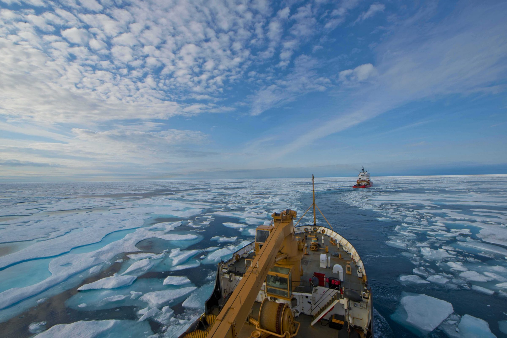

As the last iceberg in the Northwest Passage is expected to melt this week, all eyes are on the Bering Strait, the opening that is surrounded by Alaska to its right and Russia to its left. It is yet another profound effect of climate change that will come to redefine America and Russia’s relationship. The passage holds enormous economic potential as shipping through this strait will reduce the shipping times and distance by thousands of nautical miles.
The melting in the Arctic Ocean, accelerated over the past three decades by carbon dioxide emission and global warming, has led to the opening of shipping routes that no longer need icebreakers. Most commercial shippers will be able to move across the thin ice that remains in the Arctic. While there are extensive benefits in cutting shipping costs, which could theoretically reduce prices seen in grocery and department stores, climate scientists have warned that the warming of the Arctic Ocean will increase the intensity of heatwaves worldwide as the two poles have acted for centuries as the world’s refrigerator, reflecting light from the sun back into space. In addition, the loss of ice has already contributed to the extinction of roughly 70% of the world’s polar bears as wildlife and humans have come in contact more frequently in the past decade. Rising sea levels from the melting ice continue to pose a threat to America’s and Canada’s coast, which already has caused loss of thousands of beaches and homes in California.
The two countries have not made any moves, militarily or economically, yet, but according to Andrew Lo, an expert on Russia at the Center for Strategic & International Studies, within the next few years, shipping companies are expected to travel through the Northwest Passage, and then will be followed by military ships. How these interactions will go down all depends on whether the leaders pledge to keep the military out of the area. Another question remains whether the Arctic Council will be resurrected. It was dissolved back in 2023 after Russia invaded Ukraine, leading the other member states, a list that includes Canada, Denmark, Finland, Iceland, Norway, Sweden, and the United States, to boycott Russia’s military activity worldwide.
In addition, China may also want a piece of the Northwest Passage. While the country does not have a strong military incentive to put troops near the area, it has a purely economical reason for moving in. The shipping route through the Arctic instead of the Suez Canal to Europe will cut travel time by 40%. It would also expand China’s troubling Silk and Road Project.
This news came as world leaders met at the G20 summit in Philadelphia. Russia and the United States plan to meet on the sidelines in New York City in the coming days. Both spokesperson for President Mitchell of the US and President Ivanov of Russia decline to comment on whether the world leaders will discuss the issue of the Northwest Passage.
Mr. Lo wrote in an email that “for years to come, the Arctic is the fuse waiting to be lit. The question is not whether it will be lit, but when and which nation will light it first.”
Northwest Passage Will Continue America and Russia’s Deadly Conflicts

Photo: Nate Littlejohn / U.S. Coast Guard